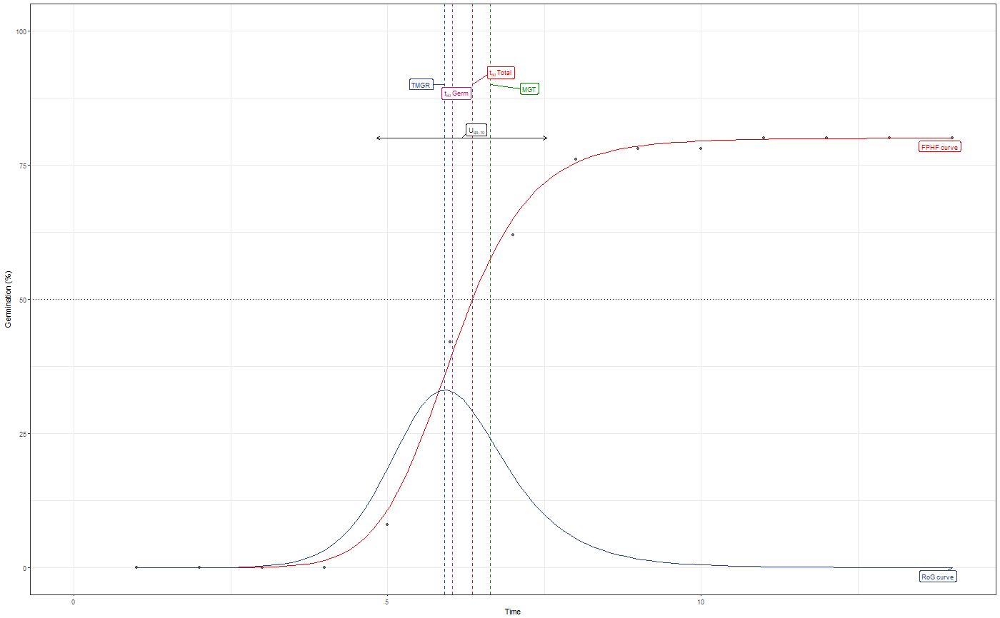
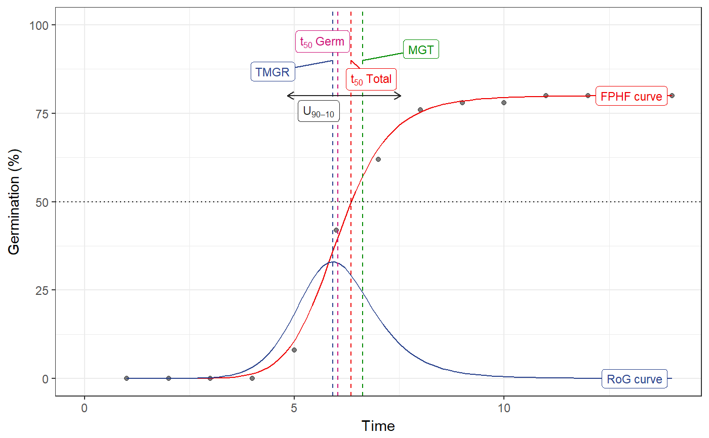

R/FourPHFfit.R
Fit a four-parameter hill function (El-Kassaby, et al. 2008) to cumulative germination count data and compute the associated parameters.
FourPHFfit(germ.counts, intervals, total.seeds, partial = TRUE, fix.y0 = TRUE, fix.a = TRUE, tmax, xp = c(10, 60), umin = 10, umax = 90, tries = 3, limits = TRUE, plotlabels = TRUE)
| germ.counts | Germination counts at each time interval. Can be partial or
cumulative as specified in the argument |
|---|---|
| intervals | The time intervals. |
| total.seeds | Total number of seeds. |
| partial | logical. If |
| fix.y0 | Force the intercept of the y axis through 0. |
| fix.a | Fix a as the actual maximum germination percentage at the end of the experiment. |
| tmax | The time up to which AUC is to be computed. |
| xp | Germination percentage value(s) for which the corresponding time is
to be computed as a numeric vector. Default is |
| umin | The minimum germination percentage value for computing uniformity.
Default is |
| umax | The maximum germination percentage value for computing uniformity.
Default is |
| tries | The number of tries to be attempted to fit the curve. Default is 3. |
| limits | logical. If |
| plotlabels | logical. If |
A list with the following components:
A data.frame of parameter estimates, standard errors and p value.
A one-row data frame with estimates of model fitness such as log likelyhoods, Akaike Information Criterion, Bayesian Information Criterion, deviance and residual degrees of freedom.
The asymptote or the maximum cumulative germination percentage.
The mathematical parameter controlling the shape and steepness of the germination curve.
The half-maximal activation level
The intercept on the y axis.
Time at germination onset
duration between the time at germination onset (lag) and that at 50% germination.
time required for 50% of total seeds to germinate.
time required for x% (as specified in argument xp)
of total seeds to germinate.
time required for 50% of viable/germinated seeds to germinate.
time
required for x% (as specified in argument xp) of viable/germinated
seeds to germinate.
Time interval between umin%
and umax% of viable seeds to germinate.
Time at maximum germination rate.
The estimate of area under the curve.
Mean germination time
Skewness of mean germination time
The message from nls.lm
Logical value indicating whether convergence was achieved.
The plot of the cumulative germination curve as an object of
class ggplot.
The cumulative germination count data of a seed lot can be modelled to fit a four-parameter hill function defined as follows (El-Kassaby, et al. 2008):
y = y0 + [axb ⁄ (cb + xb)]
Where, y is the cumulative germination percentage at time x, y0 is the intercept on the y axis, a is the asymptote, or maximum cumulative germination percentage, which is equivalent to germination capacity, b is a mathematical parameter controlling the shape and steepness of the germination curve (the larger the b parameter, the steeper the rise toward the asymptote a, and the shorter the time between germination onset and maximum germination) and c is the "half-maximal activation level" and represents the time required for 50% of viable seeds to germinate (c is equivalent to the germination speed).
Once this function is fitted to the curve, FourPHFfit computes the time
to 50% germination of total seeds (t50.total) or viable seeds
(t50.Germinated). Similarly the time at any percentage of germination
(in terms of both total and viable seeds) as specified in argument xp
can be computed.
The time at germination onset (lag) can be computed as follows:
lag = b
√[−y0cb ⁄ (a +
y0)]
The value Dlag−50 is defined as the duration between the time at germination onset (lag) and that at 50% germination (c).
The time interval between the percentages of viable seeds specified in the
arguments umin and umin to germinate is computed as
uniformity(Utmax−tmin).
Utmax−tmin = tmax − tmin
The partial derivative of the four-parameter hill function gives the instantaneous rate of germination (s) as follows:
s = ∂y⁄∂x = abcbxb-1⁄√[(cb + xb)2]
From this function for instantaneous rate of germination, the time at maximum germination rate (TMGR) can be estimated as follows:
TMGR = b √[cb(b − 1) ⁄ (b+1)]
TMGR represents the point in time when the instantaneous rate of germination starts to decline.
The area under the curve (AUC) is obtained by integration of the fitted curve between time 0 and time specified in the argument `tmax`.
Integration of the fitted curve gives the value of mean germination time (MGT) and the skewness of the germination curve is computed as the ratio of MGT and the time for 50% of viable seeds to germinate (t50).
Skewness = MGT ⁄ t50
FourPHFfit plots the cumulative germination curve (FPHF curve) and the
rate of germination curve (RoG curve) with different parameters annotated (if
argument plotlabels is specified as TRUE).
If final germination percentage is less than 10%, a warning is given, as the results may not be informative.
El-Kassaby YA, Moss I, Kolotelo D and Stoehr M (2008). “Seed germination: Mathematical representation and parameters extraction.” Forest Science, 54(2), pp. 220--227. doi: 10.1093/forestscience/54.2.220 .
x <- c(0, 0, 0, 0, 4, 17, 10, 7, 1, 0, 1, 0, 0, 0) y <- c(0, 0, 0, 0, 4, 21, 31, 38, 39, 39, 40, 40, 40, 40) int <- 1:length(x) total.seeds = 50 # From partial germination counts #---------------------------------------------------------------------------- FourPHFfit(germ.counts = x, intervals = int, total.seeds = 50, tmax = 20)#> $Parameters #> term estimate std.error statistic p.value #> 1 a 80.000000 1.24158595 64.43372 1.973240e-14 #> 2 b 9.881947 0.70779379 13.96162 6.952322e-08 #> 3 c 6.034954 0.04952654 121.85294 3.399385e-17 #> 4 y0 0.000000 0.91607007 0.00000 1.000000e+00 #> #> $Fit #> sigma isConv finTol logLik AIC BIC deviance df.residual #> 1 1.769385 TRUE 1.490116e-08 -25.49868 60.99736 64.19265 31.30723 10 #> #> $a #> [1] 80 #> #> $b #> [1] 9.881947 #> #> $c #> [1] 6.034954 #> #> $y0 #> [1] 0 #> #> $lag #> [1] 0 #> #> $Dlag50 #> [1] 6.034954 #> #> $t50.total #> [1] 6.355122 #> #> $txp.total #> [1] 4.956266 6.744598 #> #> $t50.Germinated #> [1] 6.034954 #> #> $txp.Germinated #> [1] 4.831809 6.287724 #> #> $Uniformity #> [1] 2.70588 #> #> $TMGR #> [1] 5.912195 #> #> $AUC #> [1] 1108.975 #> #> $MGT #> [1] 6.632252 #> #> $Skewness #> [1] 1.098973 #> #> $msg #> [1] "#1. Relative error in the sum of squares is at most `ftol'. " #> #> $isConv #> [1] TRUE #> #> $plot#># From cumulative germination counts #---------------------------------------------------------------------------- FourPHFfit(germ.counts = y, intervals = int, total.seeds = 50, tmax = 20, partial = FALSE)#> $Parameters #> term estimate std.error statistic p.value #> 1 a 80.000000 1.2415867 64.43368 1.973252e-14 #> 2 b 9.881927 0.7077918 13.96163 6.952270e-08 #> 3 c 6.034953 0.0495266 121.85275 3.399437e-17 #> 4 y0 0.000000 0.9160705 0.00000 1.000000e+00 #> #> $Fit #> sigma isConv finTol logLik AIC BIC deviance df.residual #> 1 1.769385 TRUE 1.490116e-08 -25.49868 60.99736 64.19265 31.30723 10 #> #> $a #> [1] 80 #> #> $b #> [1] 9.881927 #> #> $c #> [1] 6.034953 #> #> $y0 #> [1] 0 #> #> $lag #> [1] 0 #> #> $Dlag50 #> [1] 6.034953 #> #> $t50.total #> [1] 6.355121 #> #> $txp.total #> [1] 4.956263 6.744599 #> #> $t50.Germinated #> [1] 6.034953 #> #> $txp.Germinated #> [1] 4.831806 6.287723 #> #> $Uniformity #> [1] 2.705885 #> #> $TMGR #> [1] 5.912194 #> #> $AUC #> [1] 1108.976 #> #> $MGT #> [1] 6.632252 #> #> $Skewness #> [1] 1.098973 #> #> $msg #> [1] "#1. Relative error in the sum of squares is at most `ftol'. " #> #> $isConv #> [1] TRUE #> #> $plot#>